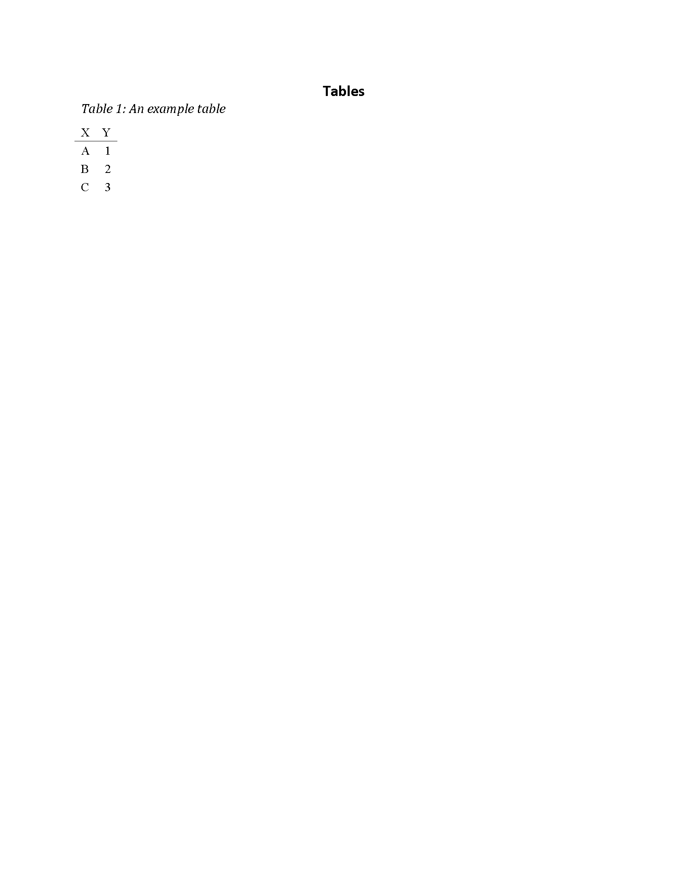
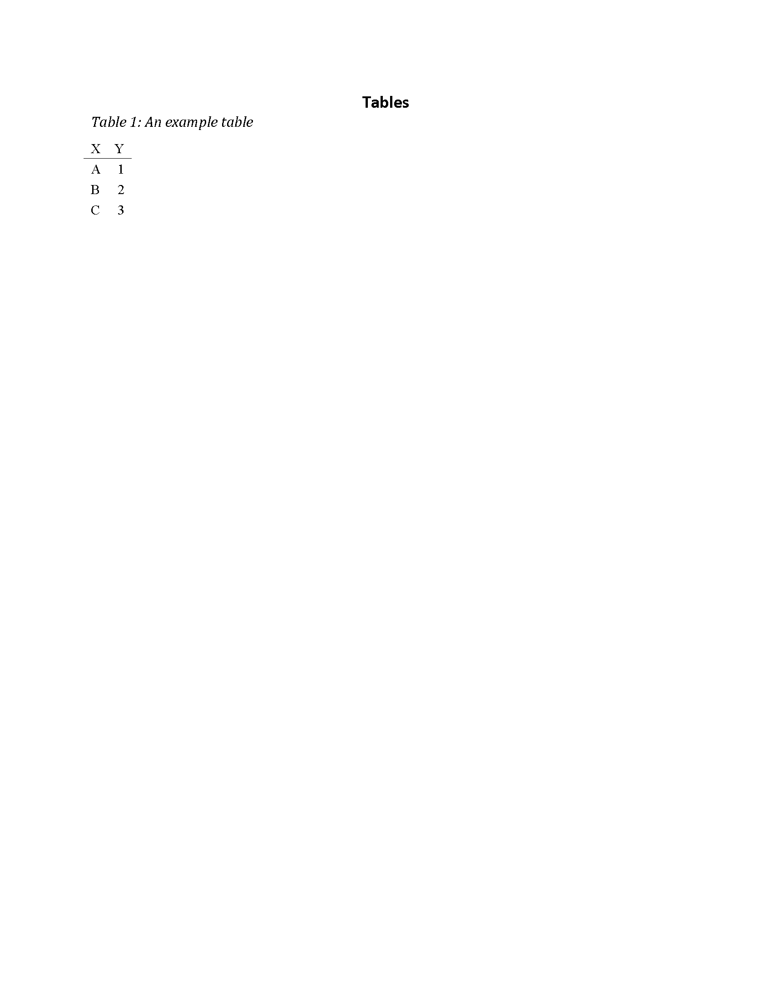
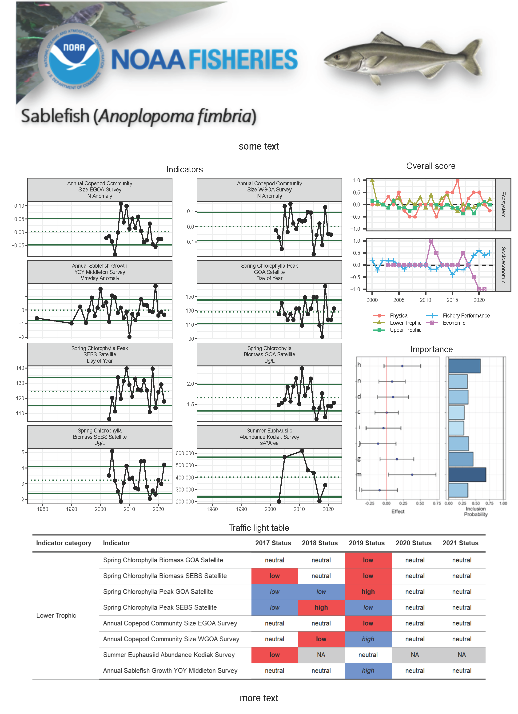

Create ESP reports
create-ESP.RmdESP report cards
An ESP report card with default settings can be produced using the
code below. Run ?AKesp::render_esp() to see the help file
and learn how to update the parameters to incorporate specific
information on your stock of interest.
AKesp::render_esp(
esp_data = AKesp::get_esp_data("Alaska Sablefish"),
esp_type = "report_card"
)Partial and full ESPs
Create your template
The AKesp::create_template function creates an ESP
template at the specified path. I strongly suggest using the
here package to reference file paths.
AKesp::create_template(
path = here::here(),
type = "full"
)
Create your content
- Put all figures in the
imagesfolder (.png or .jpeg format) and fill outfigure_spreadsheet.csv. Enter figures into the spreadsheet in the order you want them to appear. If you’d like to include any of the “standard” ESP figures, you can use a keyword in the chunk_name column (these keywords are automatically included in the templatefigure_spreadsheet.csv):
dat <- read.csv(system.file("figure_spreadsheet.csv",
package = "AKesp"))
knitr::kable(dat)| file_name | chunk_name | description | caption | alt_text |
|---|---|---|---|---|
| images/noaa.jpg | noaa | NOAA logo | The NOAA logo. | An image of the NOAA logo |
| conceptual-model | shortcut to include conceptual model | will be automatically produced | ||
| traffic-eco | shortcut to include ecosystem traffic light figure | will be automatically produced | ||
| traffic-socio | shortcut to include socioeconomic traffic light figure | will be automatically produced | ||
| overall | shortcut to include overall traffic score figure | will be automatically produced | ||
| bayesian | shortcut to include bayesian summary figure | will be automatically produced |
- Put all tables in the
tablesfolder (.csv format) and fill outtable_spreadsheet.csv. Enter tables into the spreadsheet in the order you want them to appear. If you’d like to include the “standard” ESP tables, you can use a keyword in the chunk_name column (these keywords are automatically included in the templatetable_spreadsheet.csv):
dat <- read.csv(system.file("table_spreadsheet.csv",
package = "AKesp"))
knitr::kable(dat)| file_name | chunk_name | description | caption |
|---|---|---|---|
| tables/example.csv | example | example table | An example table |
| eco-table | shortcut for creating the ecosystem traffic light table | will be automatically produced | |
| socio-table | shortcut for creating the socioeconomic traffic light table | will be automatically produced |
Put all your references in the
references_spreadsheet.csv, following the example format. Areferences.bibfile will be created and used to compile your in-text references and literature cited section.Edit
...-esp-text-template.docx(can be done on Google Drive and then downloaded). Remember to follow markdown formatting syntax for tables, figures, and references using keywords from the respective spreadsheets.
Create the ESP
Finally, use AKesp::render_esp to generate your ESP from
the template content.
Example full ESP
After creating a full ESP template, running
AKesp::render_esp will produce an example ESP using the
data and parameters that you specify. Due to the pagination of the
traffic light figures combined with Rmarkdown figure rendering
limitations, you will need to copy and paste the traffic light figures
into the correct order and delete repetitive captions (these sections
are marked in the output).
AKesp::render_esp(
esp_type = "full",
esp_data = AKesp::get_esp_data("Alaska Sablefish"),
esp_text = "full-esp-text-template.docx",
fig_spreadsheet = "figure_spreadsheet.csv",
tab_spreadsheet = "table_spreadsheet.csv"
)


 


ESP one pager
A “one pager” is shorter than a report card and summarizes the ESP in
a single page. See ?AKesp::one_pager() for more information
on how to update the parameters to customize your one pager.
dat <- AKesp::get_esp_data("Alaska Sablefish")
AKesp::one_pager(
overall_data = dat,
data = dat %>%
dplyr::filter(CATEGORY == "Lower Trophic")
)